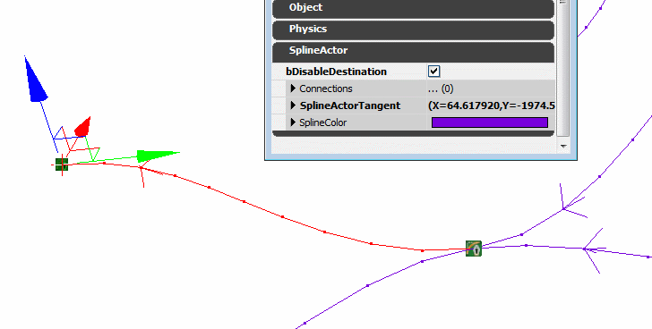

UDN
Search public documentation:
UsingSplineActorsJP
English Translation
中国翻译
한국어
Interested in the Unreal Engine?
Visit the Unreal Technology site.
Looking for jobs and company info?
Check out the Epic games site.
Questions about support via UDN?
Contact the UDN Staff
中国翻译
한국어
Interested in the Unreal Engine?
Visit the Unreal Technology site.
Looking for jobs and company info?
Check out the Epic games site.
Questions about support via UDN?
Contact the UDN Staff
スプライン アクタの使用
ドキュメント概要: SplineActors クラスを使用してレベル内のスプラインのセットを作成する方法。 ドキュメントの変更ログ: James Golding により作成。概観
時により、ゲーム システムはレベルを通して複雑なパスを必要としますが、Matinee ツールに適切ではありません。この例としては、ビークル ルートがブランチし、マージしなければいけないようなトラフィック システムなどがあります。これには、SplineActor と呼ばれる Actor クラスを使用することができます。各 SplineActor は、他の多くの SplineActors と接続することができ、それぞれがスプラインを形作るのに使用されるタンジェント ベクトル (または「ハンドル」) を持ちます。 SplineActor システムは AI パス システムと異なります。というのは、接続は自動的に作成されたり、調節されたりせず、エンティティがノード間を妨げられずにパスできることを確保するようなチェックが行われないからです。しかしながら、パスの形をかなりコントロールすることができます。
SplineActor システムは AI パス システムと異なります。というのは、接続は自動的に作成されたり、調節されたりせず、エンティティがノード間を妨げられずにパスできることを確保するようなチェックが行われないからです。しかしながら、パスの形をかなりコントロールすることができます。
編集
SplineActors を使用して作成されるパスを編集するエディタ ショートカットはたくさんあります。接続
接続を作成するもっとも簡単な方法は、[Alt] を押しながら既存の SplineActor をドラッグすることです。これは、複製に使用する通常のエディタ ショートカットですが、SplineActors では、新しい SplineActor を既存のスプラインに挿入します。この方法で、繰り返し最後のポイントを新しい場所へ [Alt] 長押しドラッグすることにより、簡単にスプラインを延長することができます。 接続を作成するもう 1 つの方法は、2 つの SplineActors を選択し、ピリオド [.] キーを押すことです。これは、1 つ目に選択された SplineActor と 2 つ目に選択された SplineActor を接続します。2 つのポイントがスプラインで既に接続されている場合、ピリオド キーを押すと、スプラインの方向を反対にするので、修正が簡単になります。 また、2 つのポイントを選択して、1 つで右クリックをし、Spline Options (スプライン オプション) -> Connect/Flip (接続/反転) を選ぶこともできます。接続の解消
接続を解消するもっとも簡単な方法は、[Alt] キーを押しながら、スプライン自身のどこかをクリックすることです。これは、Kismet などの接続を解消するのと同じショートカットです。 また、2 つのポイントを選択して、1 つで右クリックをし、Spline Options (スプライン オプション) -> Break (解消) を選ぶこともできます。 さらに、すべての SplineActors を選び、どれか 1 つで右クリックをし、Spline Options (スプライン オプション) -> Break All Links (すべてのリンクを解消) を選ぶことにより、すべての接続を解消することができます。形の調節
SplineActor を選択すると、そのポイントで湾曲をコントロールする白いハンドルが表示されます。ハンドルの各端にある小さい四角は、マウスでクリックとドラッグをして、形を変更するのに使用できます。また、SplineActor のプロパティ ウィンドウに直接、希望のタンジェントを入力することもできます。SplineActor タンジェントは、アクタに関連して格納されることに注意してください。これは、アクタを回転させると、タンジェントも回転するということです。これにより、多くの SplineActors を選択し、マップの異なる部分に変換/回転をしても、カーブの形を維持することができます。方向の変更
スプラインは、特定の方向を持っており、これはカーブの矢印に示されています。カーブの方向を変えたい場合は、上記したように 2 つの接続されたポイントを選択し、ピリオド [.] キーを押すことで可能です。各端のタンジェントの方向は、そのまま従うので、スプラインの形が変わることに注意してください。 多くの SplineActors を含むスプライン全体の方向を変えたい場合は、すべてを選択し、どれか 1 つで右クリックをして Spline Options (スプライン オプション) -> Reverse All Directions (すべての方向を反転) を選択してください。このオプションは、スプライン全体の形を維持しようとし、選択されたそれぞれの SplineActor のタンジェントの方向を反転することに注意してください。ブランチの無効化
アプリケーションで、スプライン ネットワークのブランチを「無効化」に指定することが可能です。SplineActor には bDisableDestination と呼ばれるオプションがあり、無効化にはこれを使用します。すると、SplineActor に接続しているすべてのスプライン ブランチは、「無効化」であるとみなされ、エディタで赤で描かれます。
SplineActor で Toggle Kismet (Kismet をトグル) アクションを使用することで、ゲーム内で目的地 SplineActors の有効化/無効化をすることができます。